This page covers the internals of how the simplest lofigui app works: the request lifecycle, polling mechanism, and graceful shutdown.

app.Handle(model) combines start and display into one endpoint. It uses the buffer as state:
| Buffer | Action running | Behaviour |
|---|---|---|
| Empty | No | Start model goroutine, render with Refresh header |
| Any | Yes | Render current buffer with Refresh header (polling) |
| Non-empty | No | Render final output, no Refresh header (done) |
When the model goroutine returns normally, Handle calls flush() automatically:
http.Server.Shutdown()The server returns nil from app.ListenAndServe on graceful shutdown (exit code 0). Panics and bind errors return non-nil (exit code 1).
HandleRoot/HandleDisplay (later examples) call EndAction() directly. The server stays alive for restart. Flush() is available as a public method for models that want to trigger shutdown explicitly.
For the simplest case, NewApp() provides sensible defaults that later examples override:
| Default | Value | Override |
|---|---|---|
| Controller | Built-in Bulma template (created lazily on first request) | app.SetController(ctrl) |
| Refresh time | 1 second | app.SetRefreshTime(n) |
| Display URL | /display |
app.SetDisplayURL(url) |
| Favicon | Auto-registered on DefaultServeMux | Register your own /favicon.ico handler first |
For apps that need restart support or a long-lived server, use separate endpoints:
http.HandleFunc("/", func(w http.ResponseWriter, r *http.Request) {
app.HandleRoot(w, r, model, true)
})
http.HandleFunc("/display", func(w http.ResponseWriter, r *http.Request) {
app.HandleDisplay(w, r)
})HandleRoot resets the buffer, starts the model, and redirects to /display. HandleDisplay renders the current state. The model calls EndAction() when done. The server stays alive — visiting / again restarts the model.